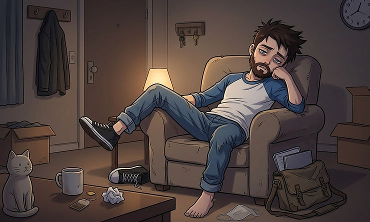

You made it through the whole workday. You responded to every email with appropriate punctuation. You laughed at the right moments in the meeting. You nodded along when someone told a long, winding story that had no point. You said "sounds good!" when nothing about it sounded good. And then you got to your car, sat down, and couldn't move.
Not tired. Not just tired. Something heavier than that. Something that doesn't fully go away after a good night's sleep or a weekend off.
That's the kind of exhaustion masking creates. And if it sounds familiar, this post is for you.
What We're Actually Talking About
Masking is the process of hiding or suppressing your natural neurodivergent traits in order to fit in or meet the expectations of a world that wasn't designed with your brain in mind. It's the mental script you run before every conversation. It's monitoring your volume, your eye contact, your fidgeting, your emotional reactions, your special interests, your stimming. All at the same time. All day long.
Because I wasn't diagnosed until I was well into my adult life, I spent pretty much my entire life masking. Each day I would go to work and do everything in my power to make sure that nobody noticed anything "weird" about me. I made sure I wasn't stimming, I made sure that I didn't interrupt people, and I did everything I could to make eye contact, even if it meant that I wasn't hearing anything they were saying in some scenarios. And because of this, at the end of the day, every day, was exhausted. It took all my mental capacity to hold it together and not completely break down. In some cases, breaking down was exactly what I did the moment I got home. It took it's toll on my to such a degree that once I finally started trying to lower my mask, I didn't know how to because I didn't even know who I really was. It took me years to heal from the burnout that my lifetime of masking had caused.
Burnout, in the neurodivergent sense, isn't the same as being overworked. It's what happens when your brain has been operating in a state of constant override for so long that it runs out of resources entirely. Executive function drops. Emotional regulation becomes almost impossible. Sensory sensitivity spikes. Things that used to feel manageable suddenly feel unbearable. And to everyone around you, you might still look totally fine.
That gap, between how you look and how you actually feel, is part of what makes this so hard to name and so hard to recover from.
Why This Cycle Hits Neurodivergent People So Hard
Here's the thing about masking: it's often not a choice, at least not in any conscious or simple way. Most of us learned to mask young, because the feedback was clear. Be louder. Be quieter. Stop moving. Make more eye contact. Be more, or less, of yourself in ways that made other people comfortable.
So we learned. We got good at it. And for a long time, that might have even felt like success.
But the body keeps the score, as they say. And the nervous system has limits.
For those of us with ADHD or autism, our baseline cognitive and regulatory load is already higher than average. We're processing more sensory information, working harder to follow conversations, using extra energy to plan and sequence and self-monitor. When you add masking on top of that, the math just doesn't work long-term. You can only run that many background programs before the whole system slows down and crashes.
This is where the Physical regulation piece of recovery becomes so important. Burnout isn't just a mindset problem you think your way out of. It lives in the body. Your sleep is disrupted. Your appetite changes. Everything feels louder, heavier, more. The path back has to include actual physical rest, not just permission to feel tired, but real changes in what your nervous system is being asked to carry.
What Neurodivergent Burnout Recovery Looks Like When You Stop Fighting Your Brain
Recovery from masking burnout isn't about pushing through. It's actually the opposite of that.
It's about finding, slowly and imperfectly, the conditions where you don't have to perform. That might mean scaling back your social commitments for a while without apologizing for it. It might mean doing things the "weird" way because the weird way works for you. It might mean letting some things be unfinished, unpolished, or undone.
It also means rebuilding something that years of masking can quietly chip away at: trust in yourself.
When you've spent years suppressing your instincts, doubting your perceptions, and overriding your needs, your relationship with your own inner voice gets complicated. You stop knowing what you actually want or need because you've been overriding it so automatically for so long. This is the Esteem and self-trust piece of real recovery, and it's slower than people want it to be. But it's real, and it's possible.
Not as a productivity project. Not as a self-improvement arc. Just as a return to yourself.
Recovery starts looking less like fixing something broken and more like giving something alive the conditions it needs to actually grow.
So here's the question I'll leave you with: what's one thing you've been masking that you haven't given yourself permission to put down yet?